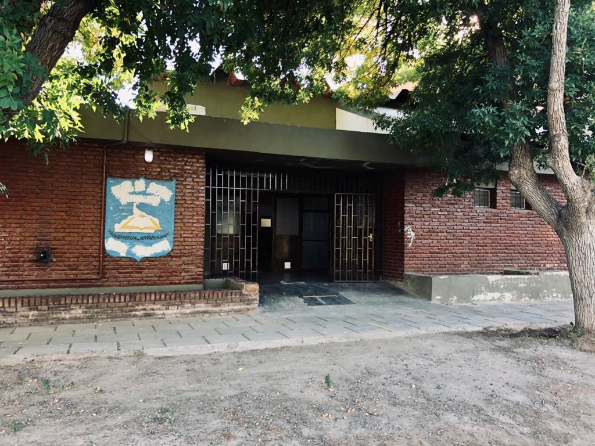

INTEGRACION DE PROYECTOS DE FERIAEXPO ESTUDIANTIL C.E.T. N° 31LEGISLACIÓN DEL TRABAJO
Inicio
La importancia de educar sobre violencia de género
La ESI es crucial en cualquier organización educativa, permitiendo a docentes abordar temas como la violencia de género. Las escuelas deben centrarse en contrarrestar la violencia de género, aprovechando las leyes existentes para proteger a los estudiantes.
Es importante resaltar que, en lo que respecta a la legislación laboral, conocer las leyes laborales puede ser de gran ayuda para que los estudiantes comprendan sus derechos y responsabilidades en el lugar de trabajo, evitando así la explotación y garantizando un trato justo.
En cuanto a la violencia de género, es un problema grave que afecta a muchas personas, especialmente a los jóvenes.
Esto puede incluir cómo la violencia en el noviazgo puede afectar su rendimiento laboral y qué recursos pueden estar disponibles para ellos a través de su empleador si se encuentran en una situación de este tipo. En la cotidianeidad, la violencia que se ejerce en una relación tóxica no tiene género. Esto quiere decir que tanto hombres como mujeres, independientemente a su edad, pueden ser víctimas o perpetradores de violencia. Por ende, educar sobre este tema puede ayudar a que los, las y les estudiantes reconozcan las señales de una relación abusiva y a buscar ayuda si es necesario. También tras adquirir conocimientos pueden promover relaciones saludables y el respeto mutuo.
La conexión entre la violencia en el noviazgo y la legislación laboral
Parece un poco desconectado al principio, ¿verdad? Pero hay una conexión entre ambas. La violencia en el noviazgo puede tener un impacto significativo en el rendimiento laboral de una persona. Si alguien está en una relación abusiva, puede ser difícil concentrarse en el trabajo o incluso mantener un empleo debido al estrés y la angustia emocional.
Además, la legislación laboral incluye disposiciones reglamentarias para ayudar a las víctimas de violencia doméstica o de pareja. Por ejemplo, la ley 14.893 establece la “Licencia para Mujeres Víctimas de Violencia” destinada a todas las trabajadoras de la administración pública o privada, permitiendo a las personas tomarse tiempo libre del trabajo para así poder buscar ayuda legal, asistir a citas médicas o mudarse a un lugar seguro.
Aunque nuestrxs adolescentes pueden no estar en el mundo laboral todavía, es crucial que estén informados sobre temas como la violencia en el noviazgo. Creemos como institución educativa, ante las leyes de Inclusión sobre de Género y Diversidad, que este tipo de educación puede ayudar a crear una generación de trabajadores que no toleren la violencia en ninguna forma y estén dispuestos a apoyar a colegas que puedan estar enfrentando estas situaciones.
Acerca de Nosotros
CONSTRUYENDO UN MUNDO LABORAL E IGUALITARIO PARA TODES
Nuestro objetivo principal es generar conciencia en toda la comunidad educativa del C.E.T. N° 31 y de Campo Grande acerca de la importancia de erradicar la violencia, ya que la concientización es el primer paso para lograr un cambio significativo en la sociedad.
La creación de conciencia implica informar y educar a las personas sobre los diferentes tipos de violencia, sus consecuencias y cómo prevenirla. Al hacerlo, buscamos promover una comprensión más profunda de los problemas relacionados con la violencia y fomentar la empatía hacia las víctimas. Además, al generar conciencia en la comunidad educativa, lograremos involucrar a todas las personas que desempeñan un papel clave en la prevención y erradicación de la violencia, incluyendo a estudiantes, padres, docentes y personal administrativo.
Nuestros objetivos son que, al trabajar juntos, los estudiantes puedan implementar estrategias efectivas para prevenir la violencia y promover relaciones saludables y respetuosas. Al adquirir estos conocimientos, podrán desafiar actitudes y creencias que perpetúan la violencia. Asimismo, al conocer los estereotipos de género y promover la igualdad, podrán transformar su pensamiento crítico y fomentar la aceptación y el respeto entre sus compañeros.
Somos una secundaria comprometida en la prevención de la violencia en parejas. Trabajamos arduamente para abordar esta problemática y generar conciencia.
Establecimiento: C.E.T. N° 31
Orientación: Técnico en equipo e Instalaciones electromecánicas
Espacio curricular: Legislación del Trabajo
Curso: 5to 1ra, 2da y 3ra
Turno: Mañana
Carga Horaria: Una hora por semana
Docentes: Ailigo Ariadna Vanesa y Soledad Urra
Ciclo Lectivo: 2023
Plan autorizado por Resolución: 137/13 (Anexo VI)

Videos
Descubre la Impactante Realidad: Tres Videos que Revelan la Cruda Verdad sobre la Violencia en las Parejas.
"CONTRASEÑA" Corto para prevenir la violencia de género en adolescentes.
"CELOS" cortometraje
"El amor no duele" - Violencia en el noviazgo
Galería de Fotos
Aquí se puede mostrar el trabajo realizado por los alumnos de 5to 3ra en formato de fotos relacionado con la concienciación sobre la violencia en parejas.
Preguntas Frecuentes
Esta sección encontrarás respuestas a preguntas comunes sobre el tema de la violencia en parejas y la prevención.
No, la violencia primaria y la violencia de género no son lo mismo, aunque están relacionadas.
La violencia primaria se refiere a los comportamientos violentos o abusivos que ocurren en las relaciones de pareja desde las etapas iniciales, como el noviazgo.
Puede manifestarse en diferentes formas, como el control excesivo, la manipulación emocional, la intimidación o el abuso físico o verbal.
Este tipo de violencia puede ocurrir en relaciones heterosexuales u homosexuales, y no está necesariamente vinculada al género.
Por otro lado, la violencia de género se refiere a la violencia que se ejerce contra una persona debido a su género.
Por lo general, esta violencia se dirige hacia las mujeres y niñas, aunque también puede afectar a hombres y personas de otros géneros.
La violencia de género es producto de desigualdades y estereotipos de género arraigados en la sociedad, y puede manifestarse en diferentes formas, como la violencia doméstica, el acoso sexual, la violencia sexual, entre otras.
Es importante reconocer que la violencia de género como un problema social y estructural que requiere un abordaje integral para su prevención y erradicación. Esto implica desafiar y transformar las normas de género desiguales, educando y promoviendo la igualdad en nuestra materia Legislación del Trabajo, y por sobre todo el respeto en todas las esferas de la cotidianeidad.
En resumen, mientras que la violencia primaria se refiere a los comportamientos violentos en las relaciones de pareja, la violencia de género se centra en la violencia ejercida debido al género de la persona. Ambos tipos de violencia son problemáticos y necesitan ser abordados con seriedad y compromiso para lograr sociedades libres de violencia.
La violencia primaria O LA VIOLENCIA EN EL NOVIAZGO se refiere a los comportamientos violentos o abusivos que ocurren en las relaciones de pareja desde las etapas iniciales, como el noviazgo. Estos comportamientos pueden manifestarse de diversas formas, incluyendo el control excesivo, la manipulación emocional, la intimidación, el aislamiento social, el abuso verbal o físico, entre otros.
Este tipo de violencia puede ser sutil y difícil de detectar al principio de la relación, lo que puede llevar a que las víctimas minimicen o justifiquen los comportamientos abusivos. Sin embargo, con el tiempo, estos comportamientos pueden volverse más intensos y peligrosos, poniendo en riesgo la seguridad y el bienestar emocional de la persona afectada.
Es importante destacar que la violencia primaria no se limita a un género específico, ya que tanto hombres como mujeres pueden ser víctimas o perpetradores de esta violencia. Además, la violencia primaria puede ocurrir en relaciones heterosexuales u homosexuales, y no está relacionada con la edad, la raza, la religión o el estatus socioeconómico.
La violencia primaria es un problema grave que afecta a millones de adolescentes en todo el mundo. Por lo expuesto, es fundamental crear conciencia sobre esta problemática, educar sobre las y educar a los estudiantes.
sobre las señales de advertencia, promoviendo relaciones basadas en el respeto mutuo, la igualdad y la no violencia.
Violencia física: Se refiere al uso de la fuerza física para causar daño o lesiones a otra persona. Esto puede incluir golpes, empujones, patadas, estrangulamientos, entre otros.
Violencia verbal: Consiste en el uso de palabras ofensivas, insultos, humillaciones, amenazas o cualquier tipo de lenguaje abusivo para dañar emocionalmente a alguien.
Violencia psicológica o emocional: Se trata de comportamientos que buscan controlar, manipular o intimidar emocionalmente a otra persona. Esto puede incluir el aislamiento, la humillación, el chantaje emocional, la manipulación de sentimientos, entre otros.
Violencia sexual: Es cualquier acto de naturaleza sexual que se realiza sin el consentimiento de una de las partes involucradas. Esto puede incluir violaciones, agresiones sexuales, acoso sexual, entre otros.
Violencia económica: Se refiere a la utilización del control económico para ejercer poder y control sobre otra persona. Esto puede incluir la limitación del acceso a recursos económicos, la negación de dinero o la obligación de entregar el salario a la otra persona.
Violencia digital o cibernética: Es el uso de la tecnología, como las redes sociales, los mensajes de texto o el correo electrónico, para acosar, intimidar o amenazar a otra persona. Esto puede incluir el envío de mensajes ofensivos, la difusión de imágenes íntimas sin consentimiento, el acoso en línea, entre otros.
El círculo de la violencia es un concepto utilizado para describir un patrón recurrente de comportamiento violento en las relaciones abusivas. Este patrón se compone de tres fases distintas:
1) Fase de tensión: En esta etapa, se acumulan tensiones y conflictos en la relación. Puede haber discusiones constantes, críticas o comportamientos controladores por parte del agresor. La víctima puede sentirse cada vez más ansiosa, temerosa o insegura.
2) Fase de explosión: En esta etapa, la tensión acumulada se desencadena en un acto violento o abusivo. Puede manifestarse como agresión física, verbal o sexual. El agresor ejerce su poder y control sobre la víctima, causándole daño físico, emocional o sexual.
3) Fase de luna de miel o reconciliación: Después de la fase de explosión, el agresor puede mostrar arrepentimiento, disculpas o remordimiento. Puede haber una aparente calma en la relación, con gestos amables, regalos o promesas de cambio. Esto puede llevar a la víctima a creer que la situación mejorará y a mantener la esperanza de que la relación sea saludable.
Sin embargo, este ciclo de violencia tiende a repetirse, y la fase de luna de miel eventualmente da paso a una nueva acumulación de tensión y una nueva explosión de violencia.
Si eres un adolescente y estás en una situación en la que te sientes maltratado o abusado por tu pareja, es importante buscar ayuda y apoyo. Puedes denunciar el maltrato o buscar asesoramiento y apoyo en los siguientes lugares:
1. Línea de ayuda nacional: En Argentina la Atención de victimas de violencia de género es la linea 144. Otra alternativa es dirigirse a la oficina de la familia dependiente de la comisaria 44 de Villa Manzano.
2. Habla con un adulto de confianza: Si te sientes seguro haciéndolo, puedes hablar con un adulto de confianza, como un padre, un tutor, un maestro, un consejero escolar o un pariente cercano. Ellos pueden brindarte apoyo y ayudarte a encontrar recursos para abordar la situación.
3. Centros de asesoramiento o consejería: Busca centros de asesoramiento o consejería para adolescentes en tu área. Los consejeros y terapeutas pueden ayudarte a lidiar con la situación y proporcionarte herramientas para tomar decisiones informadas.
4. Organizaciones de apoyo a víctimas de violencia: En muchas comunidades, existen organizaciones que brindan apoyo a víctimas de violencia, incluida la violencia en relaciones de pareja. Estas organizaciones a menudo ofrecen servicios confidenciales, como asesoramiento, refugio y asistencia legal.
5. Servicios de salud: Si estás en peligro físico, busca atención médica o servicios de salud. Los profesionales de la salud pueden brindarte atención médica y conectarte con recursos de apoyo.
6. Línea de emergencia o llamada de emergencia: En situaciones de peligro inminente, llama a la policía o a una línea de emergencia para recibir ayuda de inmediato.
Recuerda que es esencial hablar con alguien en quien confíes sobre tu situación y buscar apoyo. La violencia en las relaciones de pareja no es aceptable y hay recursos disponibles para ayudarte a salir de una situación de abuso. Busca ayuda lo antes posible para garantizar tu seguridad y bienestar.